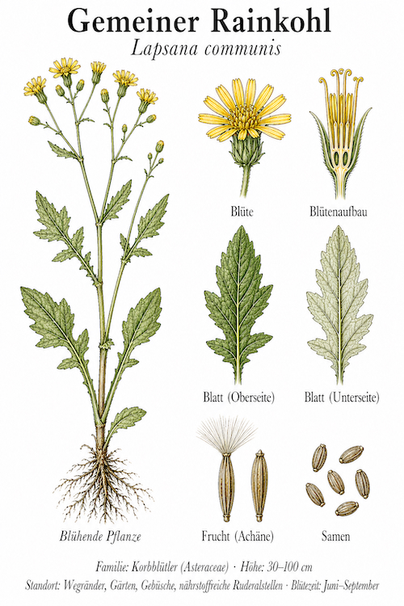
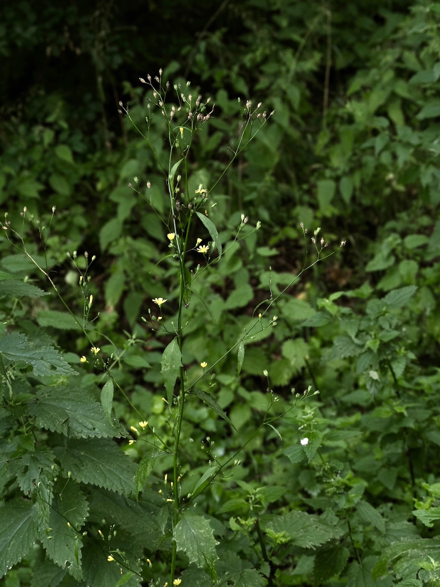
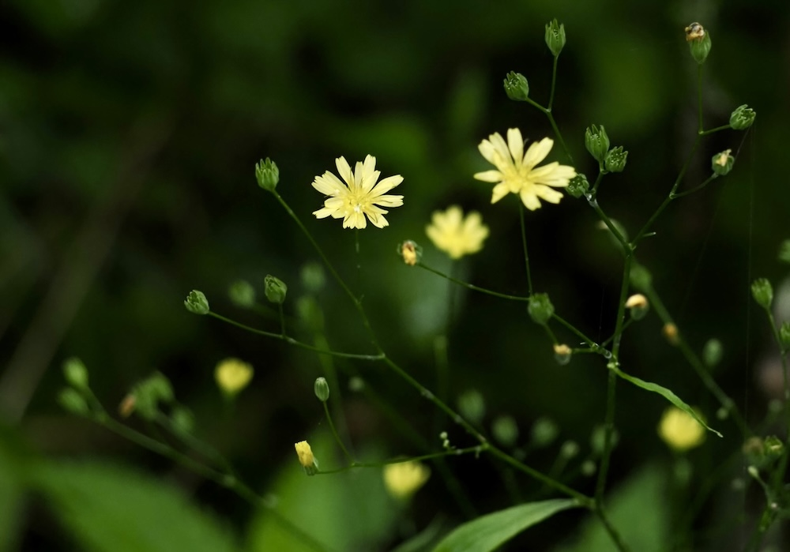

Salat aus dem Mittelalter
Im Mittelalter und bis ins 19. Jahrhundert waren die jungen Blätter des Rainkohls ein beliebter Frühlingssalat — der bittere Geschmack galt als gesund (und tatsächlich regen Bitterstoffe die Verdauung an). Auch in Suppen und Eintöpfen war er ein klassischer Wiesen-Beigeschmack. Heute hat ihn keiner mehr auf dem Teller — aber probieren kannst du ihn ja selbst (zarte junge Blätter, mit Salat gemischt).
„Lapsana“ — eine alte Story
Der Name „Lapsana“ geht zurück auf das griechische „lapsane“, wie es schon im 1. Jahrhundert bei Dioskurides erwähnt wird. Über Jahrhunderte hat dieser Name in der medizinischen Literatur gestanden — und bezeichnete genau diese unscheinbare Wiesenpflanze als wichtige Nahrungspflanze für ärmere Bevölkerungsschichten. Eine Geschichte, die in den modernen Botanikbüchern fast verschwunden ist.